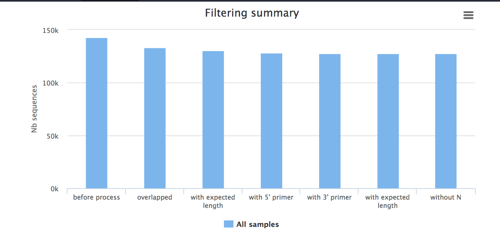
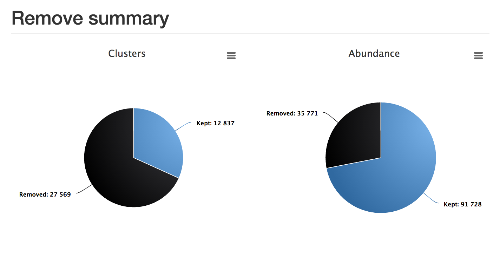
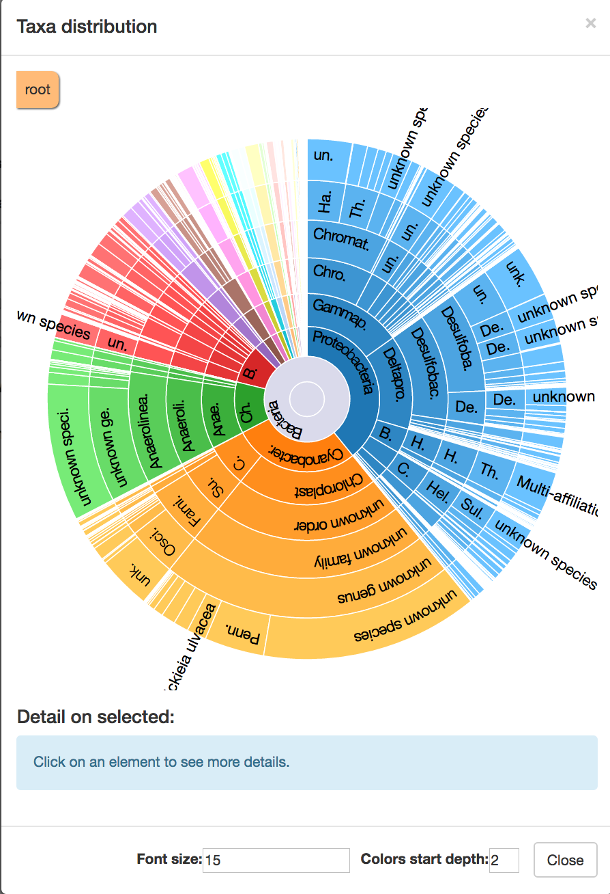

Metagenomics
Metagenomics aims to compare microbial communities from different environments by using information from the metagenome. Typically, 16S rRNA is used when classifying taxa, and whole-genome sequencing when aiming to identify gene functions and pathways.
This tutorial covers the tool called FROGS (in Galaxy): “Find Rapidly OTU with Galaxy Solution”.
Get data
-
The data: paired-end Illumina reads from two environmental samples.
-
In Galaxy, in the history panel, click on the cog item, and select “import from file”.
- In the “Archived History URL:” box paste:
-
https://swift.rc.nectar.org.au:8888/v1/AUTH_377/public/Microbial_tutorials/Galaxy-History-16S_metagenomics_dataset.tar.gz
-
You should now have four files in your Galaxy history.
- In the Galaxy tools panel, in the top search bar, type FROGS.
- This will bring up the various tools available.
- We will be using 6 of these tools.

1. Pre-process
This is the first step in the Frogs analysis. It takes in the forward and reverse sequencing reads (R1 and R2) from multiple samples (e.g. microbiome A and microbiome B) and performs the following steps:
- If the data is not in contigs, read1 and read2 will be overlapped (allowing some mismatch in overlapping region).
- Contigs that are too big or too small will be filtered out.
- If using the Illumina standard protocol: will look for those primers, filter out contigs without primers, and cut the primer sequences.
- Sequences that are too small or of poor quality will be filtered out.
- Sequences will be de-replicated: duplicates will be removed but the number of duplicates will be recorded.
Run
Go to
Sequencer : IlluminaInput type : Files by samplesReads alread contiged? : NoSamples :Name : microbiomeA <note: no spaces>Reads1 :microbiomeA_R1.fq Reads2 :microbiomeA_R2.fq Insert Samples - click plus signName : microbiomeBReads1 :microbiomeB_R1.fq Reads2 :microbiomeB_R2.fq
Reads 1 size : 250Reads 2 size : 250Expected amplicon size : 420Minimum amplicon size : 380Maximum amplicon size : 460Sequencing protocol : Illumina standard5’ primer : GGCGVACGGGTGAGTAA3’ primer : GTGCCAGCNGCNGCGG <note: needs to be in 5’ to 3’ orientation>Execute

Output
There are three output files. Click on the eye icon for each to see their contents.
Report:
- The
report.html shows how samples were filtered. For example, in the bar chart called “Filtering summary”, the number of reads kept at each filtering stage is displayed. We would expect some decrease in some of these categories, but if many reads have been filtered at a particular stage it could indicate poor quality data.

- Below this chart, a table shows the statistics for each sample. Check the boxes next to “microbiomeA” and “microbiomeB” and then click
Display amplicon lengths - shows amplicon distribution before filtering. ClickDisplay preprocessed amplicon lengths - shows the distribution has been narrowed after filtering. Check if both samples are similar.
Counts:
- The
counts.tsv file is a list of sequences and their counts in the two samples.
Fasta file:
- The
dereplicated.fasta contains the sequences, without any duplicates.
2. Clustering swarm
In this step, sequences are clustered into groups using Swarm (more information about Swarm). This takes the pre-processed
- Sorts reads by abundance.
- Clusters the reads into pre-clusters using Swarm and distance parameter of 1.
- Sorts these pre-clusters by abundance.
- Cluster the pre-clusters using Swarm and a user-specified distance.
Go to
Sequences files :dereplicated.fasta Counts file :count.tsv Aggregation distance : 3Perform deionising clustering step? : YesExecute
Note: Galaxy may say that the job submission has failed. Click Close, then click refresh in the top of the history panel. The job should be running.

Output
There are three output files.
- The
abundance.biom shows the abundance of each cluster. - The
seed_sequences.fasta contains the the cluster (OTU) representative sequences. - The
swarms.composition.tsv shows what is in each cluster.
3. Remove chimera
Closely-related sequences may form chimeras (mixed sequences) during PCR (libray prep). This step removes these sequences by the following method:
- Splits input data into samples
- Uses vsearch to find chimeras in each sample
- Removes chimeras
Go to
Sequences file :seed_sequences.fasta Abundance type :BIOM file Abundance file :abundance.biom Execute
Note: Galaxy may say that the job submission has failed. Click Close, then click refresh in the top of the history panel. The job should be running.

Output
There are three output files.
- The
non_chimera.fasta is a filtered file containing no chimeras. - The
non_chimera_abundance.biom is a filtered abundance file containing no chimeras. - The summary
report.html . In this case, although almost 70% of the clusters were removed, more than 70% of the actual reads were kept.

4. Filters
The OTUs (Operational Taxonomic Units) have now been clustered. In this step, we will filter out some of the OTUs that are either not in both samples, and/or contain at least 0.005% of all the sequences.
Go to
Sequences file :non_chimera.fasta Abundance file :non_chimera_abundance.biom *** THE FILTERS ON OTUS IN SAMPLES, OTUS SIZE and SEQUENCE PERCENTAGE : Apply filtersMinimum number of samples : 2Minimum proportion/number of sequences to keep OTU : 0.00005N biggest OTU : leave blank*** THE FILTERS ON RDP : No filters*** THE FILTERS ON BLAST : No filters*** THE FILTERS ON CONTAMINATIONS : No filtersExecute
 ]
]
Note: Galaxy may say that the job submission has failed. Click Close, then click refresh in the top of the history panel. The job should be running.
Output
There are four output files.
sequences.fasta : the retained sequences.abudance.biom : the abundance file.excluded.tsv : discarded OTUsreport.html : this shows the proportion of OTUs and the proportion of sequences kept. In this example, although most OTUs have been filtered out, most sequences have been retained.

5. Affiliation OTU
An OTU is a cluster of sequences. This step adds the taxonomy to the abundance file. It uses the SILVA database for rRNA.
Go to
Using reference database : silva123Also perform RDP assignation : NoOTU seed sequence :sequences.fasta from step 4Abundance file :abundance.biom from step 4Execute

Note: Galaxy may say that the job submission has failed. Click Close, then click refresh in the top of the history panel. The job should be running.
Output
There are two output files.
-
affiliation.biom : the abundance file with affiliation. Note: this.biom file is not human-readable. If you wish, you can convert it with the FROGS biom to tsv tool. -
report.html : the report shows the proportion of OTUs and sequences affiliated to sequences in the database. Here we can see that almost all OTUs and sequences have been taxonomically assigned, but almost 10% of OTUs could be assigned to multiple species.

6. Affiliations stat
This step computes some statistics from the analysis and generates a report of the OTUs/taxonomy found.
Go to
Abundance file :affiliation.biom from step 5Rarefaction ranks : Class Order Family Genus SpeciesAffiliation processed : FROGS blastExecute

Output
There is one output file. Click on the eye icon next to
- click on
Display global distribution : this shows the taxonomy of the sample. Start at the centre; major groups each have a segment by colour; as you go outwards, taxonomic identification becomes more specific. Click on a segment to display a table of statisics below. Click on the cross in the top right corner to exit.

- Next, we will look at the rarefaction curve, which is a measure of samples vs diversity. Click on the boxes next to each of the samples (both, or one at a time) in the table (microbiomeA and microbiomeB). Click
Display rarefaction .

Links
- FROGS slides by Yvan Le Bras https://f1000research.com/slides/5-1832
- The SILVA database: https://www.arb-silva.de/
- Other metagenomics software:
- QIIME: http://qiime.org/
- UPARSE: http://www.drive5.com/uparse/
- MOTHUR: https://www.mothur.org/
- MG-RAST: http://metagenomics.anl.gov/